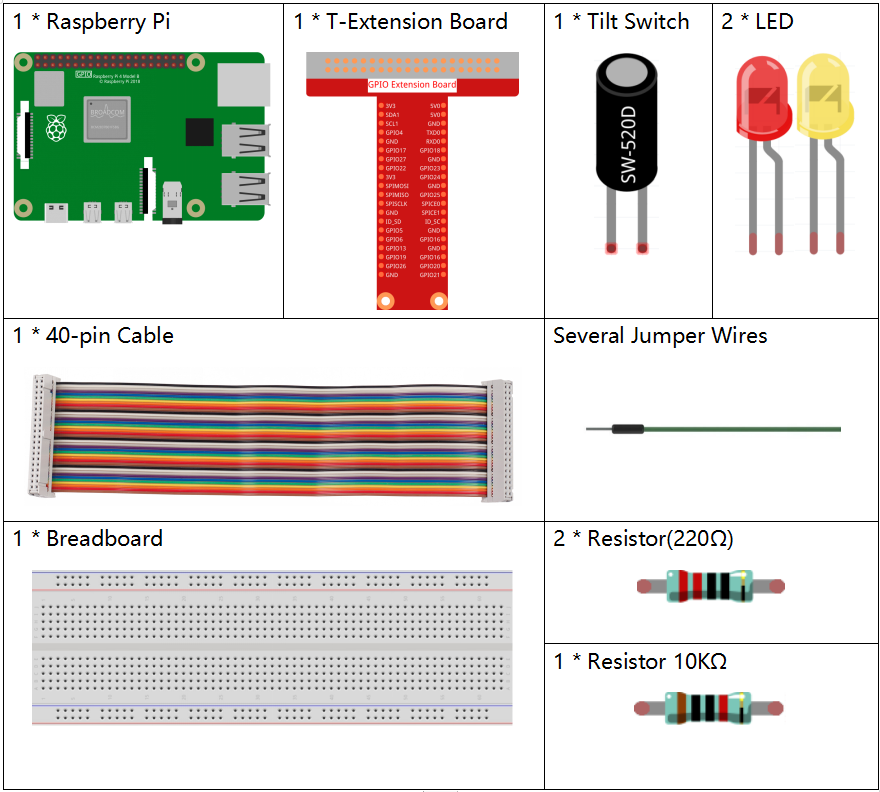

2.1.3 Neigungsschalter¶
Einführung¶
Dies ist ein Kugelkippschalter mit einer Metallkugel im Inneren. Es wird verwendet, um Neigungen eines kleinen Winkels zu erfassen.
Komponenten¶
Prinzip¶
Neigung
Das Prinzip ist sehr einfach. Wenn der Schalter in einem bestimmten Winkel gekippt wird, rollt die Kugel im Inneren nach unten und berührt die beiden Kontakte, die mit den Pins außen verbunden sind, wodurch Schaltkreise ausgelöst werden. Andernfalls bleibt der Ball von den Kontakten fern und unterbricht so die Stromkreise.

Schematische Darstellung¶


Experimentelle Verfahren¶
Schritt 1: Bauen Sie die Schaltung auf.

Für Benutzer in C-Sprache¶
Schritt 2: Verzeichnis wechseln.
cd /home/pi/davinci-kit-for-raspberry-pi/c/2.1.3/
Schritt 3: Kompilieren.
gcc 2.1.3_Tilt.c -lwiringPi
Schritt 4: Ausführen.
sudo ./a.out
Wenn Sie die Neigung horizontal platzieren, leuchtet die grüne LED auf. Wenn Sie es kippen, „Neigung!“ wird auf dem Bildschirm gedruckt und die rote LED leuchtet auf. Stellen Sie es wieder horizontal auf und die grüne LED leuchtet wieder auf.
Kode
#include <wiringPi.h>
#include <stdio.h>
#define TiltPin 0
#define Gpin 2
#define Rpin 3
void LED(char* color)
{
pinMode(Gpin, OUTPUT);
pinMode(Rpin, OUTPUT);
if (color == "RED")
{
digitalWrite(Rpin, HIGH);
digitalWrite(Gpin, LOW);
}
else if (color == "GREEN")
{
digitalWrite(Rpin, LOW);
digitalWrite(Gpin, HIGH);
}
else
printf("LED Error");
}
int main(void)
{
if(wiringPiSetup() == -1){ //when initialize wiring failed,print message to screen
printf("setup wiringPi failed !");
return 1;
}
pinMode(TiltPin, INPUT);
LED("GREEN");
while(1){
if(0 == digitalRead(TiltPin)){
delay(10);
if(0 == digitalRead(TiltPin)){
LED("RED");
printf("Tilt!\n");
}
}
else if(1 == digitalRead(TiltPin)){
delay(10);
if(1 == digitalRead(TiltPin)){
LED("GREEN");
}
}
}
return 0;
}
Kode Erklärung
void LED(char* color)
{
pinMode(Gpin, OUTPUT);
pinMode(Rpin, OUTPUT);
if (color == "RED")
{
digitalWrite(Rpin, HIGH);
digitalWrite(Gpin, LOW);
}
else if (color == "GREEN")
{
digitalWrite(Rpin, LOW);
digitalWrite(Gpin, HIGH);
}
else
printf("LED Error");
}
Definieren Sie eine Funktions-LED (), um die beiden LEDs ein- oder auszuschalten. Wenn die Parameterfarbe ROT ist, leuchtet die rote LED auf. Wenn die Parameterfarbe GRÜN ist, leuchtet die grüne LED ebenfalls auf.
while(1){
if(0 == digitalRead(TiltPin)){
delay(10);
if(0 == digitalRead(TiltPin)){
LED("RED");
printf("Tilt!\n");
}
}
else if(1 == digitalRead(TiltPin)){
delay(10);
if(1 == digitalRead(TiltPin)){
LED("GREEN");
}
}
}
Wenn der Lesewert des Neigungsschalters 0 ist, bedeutet dies, dass der Neigungsschalter gekippt ist. Dann schreiben Sie den Parameter „ROT“ in die Funktions-LED, damit die rote LED aufleuchtet. Andernfalls leuchtet die grüne LED.
Für Python-Sprachbenutzer¶
Schritt 2: Verzeichnis wechseln.
cd /home/pi/davinci-kit-for-raspberry-pi/python/
Schritt 3: Ausführen.
sudo python3 2.1.3_Tilt.py
Wenn Sie die Neigung horizontal platzieren, leuchtet die grüne LED auf. Wenn Sie es kippen, „Neigung!“ wird auf dem Bildschirm gedruckt und die rote LED leuchtet auf. Stellen Sie es wieder horizontal auf und die grüne LED leuchtet auf.
Kode
import RPi.GPIO as GPIO
TiltPin = 11
Gpin = 13
Rpin = 15
def setup():
GPIO.setmode(GPIO.BOARD) # Numbers GPIOs by physical location
GPIO.setup(Gpin, GPIO.OUT) # Set Green Led Pin mode to output
GPIO.setup(Rpin, GPIO.OUT) # Set Red Led Pin mode to output
GPIO.setup(TiltPin, GPIO.IN, pull_up_down=GPIO.PUD_UP) # Set BtnPin's mode is input, and pull up to high level(3.3V)
GPIO.add_event_detect(TiltPin, GPIO.BOTH, callback=detect, bouncetime=200)
def Led(x):
if x == 0:
GPIO.output(Rpin, 1)
GPIO.output(Gpin, 0)
if x == 1:
GPIO.output(Rpin, 0)
GPIO.output(Gpin, 1)
def Print(x):
if x == 0:
print (' *************')
print (' * Tilt! *')
print (' *************')
def detect(chn):
Led(GPIO.input(TiltPin))
Print(GPIO.input(TiltPin))
def loop():
while True:
pass
def destroy():
GPIO.output(Gpin, GPIO.HIGH) # Green led off
GPIO.output(Rpin, GPIO.HIGH) # Red led off
GPIO.cleanup() # Release resource
if __name__ == '__main__': # Program start from here
setup()
try:
loop()
except KeyboardInterrupt: # When 'Ctrl+C' is pressed, the program destroy() will be executed.
destroy()
Kode Erklärung
GPIO.add_event_detect(TiltPin, GPIO.BOTH, callback=detect, bouncetime=200)
Richten Sie eine Erkennung auf TiltPin und eine Rückruffunktion zur Erkennung ein.
def Led(x):
if x == 0:
GPIO.output(Rpin, 1)
GPIO.output(Gpin, 0)
if x == 1:
GPIO.output(Rpin, 0)
GPIO.output(Gpin, 1)
Definieren Sie eine Funktion Led (), um die beiden LEDs ein- oder auszuschalten. Wenn x = 0 ist, leuchtet die rote LED auf. Andernfalls leuchtet die grüne LED.
def Print(x):
if x == 0:
print (' *************')
print (' * Tilt! *')
print (' *************')
Erstellen Sie eine Funktion, Print (), um die obigen Zeichen auf dem Bildschirm zu drucken.
def detect(chn):
Led(GPIO.input(TiltPin))
Print(GPIO.input(TiltPin))
Definieren Sie eine Rückruffunktion für den Neigungsrückruf. Holen Sie sich den Lesewert des Neigungsschalters, dann steuert die Funktion LED（）das Ein- oder Ausschalten der beiden LEDs, abhängig vom Lesewert des Neigungsschalters.
Phänomen Bild¶